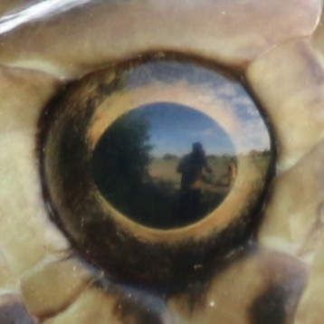

On display here is a selection from my photography collection. The bulk of the work here was taken from my frequent trips to India, which is where I have more time and leisure to live through the lens than when at home. On the road, I always have the camera at my side and as I wander through the cities and jungles, the subjects become more and more varied. People. Places. Things.
Contact me jhrdcstl77@gmail.comMy photography has developed throughout the years, starting with a simple digital camera. Adding a bit here and there over the years and studying the basics, I have become more and more confident in getting the image as I see it when I am there.
My love of nature is what prompted me to start taking photography more serious as my early shots were merely records of having been there as opposed to an artistic embellishment of an occasion with wildlife.
Having worked on animal tracking projects, taking photos on the downtime has also been a great distraction to the boredom that one can face waiting 12 days for a snake to move its position. It can also stave off jungle fever, which can easily be brought on by the repetitive racket of insects.
As I'm not a schooled photographer, I haven't been educated in a particular style, nor have I studied the photographic greats. I have just learned on the hoof, picking a little up as I go and hoping for the best for each shot. All the photos you see here have been mere split-second improvisations.
If you require my photography for any occasion, or you would like to discuss about the future exhibitions/books, then please drop me an email.
Blah, blah, blah...
* That said, I do hope you enjoy these pictures. A lot of blood, sweat and tears went into making them possible.